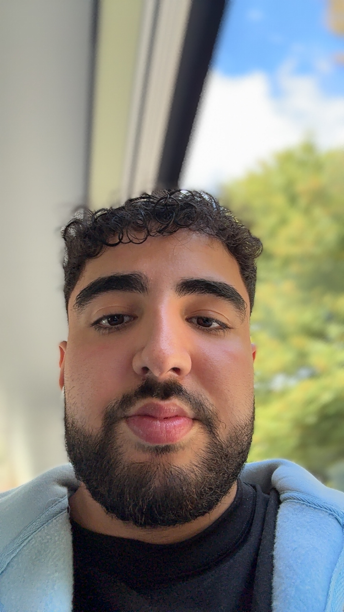
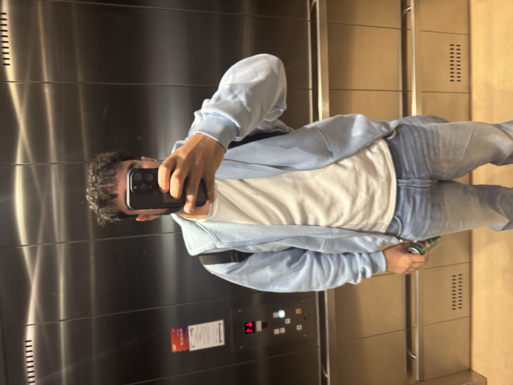

Mit CV


Her finder du et overblik over min uddannelse, erhvervserfaring og sprogkundskaber.
Uddannelse
- VIA University College – Finansøkonom, Horsens (1. semester, 2025)
- Marselisborg Gymnasium – STX, Aarhus (afsluttet)
Erhvervserfaring
-
The Call Company – Sælger (Nuværende)
Arbejder med opsøgende salg og kundekontakt. -
YouSee – Kunderådgiver (1,5 år)
Solgte TV-, internet- og mobilabonnementer samt hjalp kunder med support og vejledning. -
Zas Solutions (tidl. TM Solutions) – Salgskonsulent (9 måneder)
Solgte el-aftaler og stod for kundekommunikation.
Sprog
- Dansk – Flydende
- Engelsk – Flydende
- Tyrkisk – Flydende
Interesser
Jeg interesserer mig for teknologi, webudvikling og fitness. Jeg kan godt lide at lære nye ting og udfordre mig selv både fagligt og personligt.